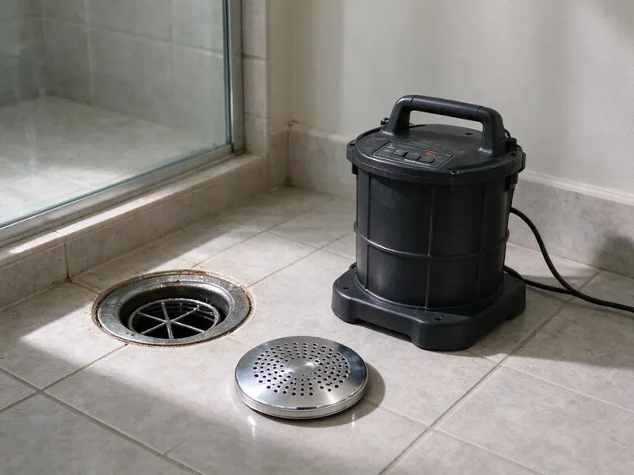
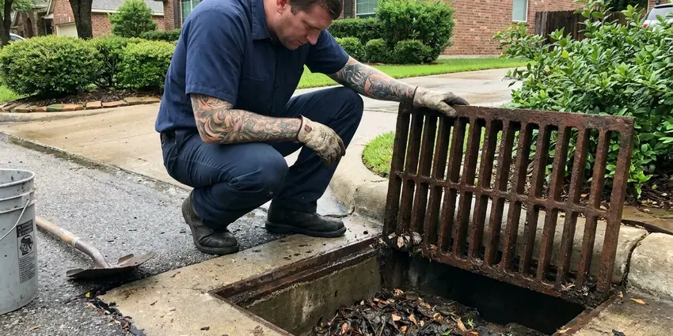

Drain Services in Lafayette, LA
Grease-heavy kitchen drain at a restaurant? Hydro jetting and maintenance plans for businesses. Lafayette, LA.
- Main Line Service
- Sewer Line Specialists
- Fast Drain Unblocking
- Licensed Plumbers

Drains That Flow Right in Lafayette, LA.
Upfront pricing before any work, no surprise add-ons.
Local Drain Cleaning in Lafayette, LA
Beau's Plumbing asks what you have been putting down the drain. We are not judging. Grease, wipes, coffee grounds and food scraps cause a big share of kitchen and main line clogs, and knowing what went in tells us whether a cable will do or the line needs jetting. Honest answers help.
Our expertise includes:
- Camera inspection with sonde locating and depth readings
- Floor drain and storm drain clearing
- Cable cleaning for sinks, tubs, showers, toilets and laundry lines

Additional Drain Services Services in Lafayette, LA
From stubborn kitchen clogs to main sewer backups, our drain services in Lafayette, LA clear the line and keep it clear with camera-verified results.




Storm Drain Cleaning near Lafayette


Customers
Why Choose Beau's Plumbing for Drain Services in Lafayette, LA?
Municipal water in Louisiana comes from rivers and aquifers, and it ranges from fairly soft to moderately hard depending on the source. Hard water leaves scale inside cast iron and ABS drains, which catches hair and grease and narrows the pipe over time. A jetter cleans the full pipe wall.
- Right Tools, Cable machines, jetters and cameras come with every crew.
- Right Equipment, The tool matches the clog.
- Area Experience, Our crews clear drains around Lafayette every day.
Citywide Coverage
We clear drains in homes all over Lafayette, from older neighborhoods with cast iron and clay pipe to newer houses with early PVC problems. Each home gets the right tool. Most calls get same-day service.
Experienced Team
We train on cameras as much as cables. Reading sewer footage is a skill. Knowing the difference between grease buildup, root intrusion and a cracked or broken pipe decides whether you need cleaning or a repair. We get it right.
Safety-First Approach
Sewage is a health hazard, so we treat it like one. Our plumbers glove up. Any spill gets cleaned and disinfected, and we keep kids and pets away from the work area until the job is done and cleaned up. Clean work.
Trusted Certified Lafayette Plumbing Services Professionals
At Beau's Plumbing, we take pride in licensed, certified plumbing services throughout Lafayette, LA. Credentials matter in this trade. Our plumbers hold recognized industry credentials, and they follow strict safety and quality rules on every repair, installation and maintenance call we run.
Call Us Now PHCC Plumbing Contractor Recognition
PHCC Plumbing Contractor Recognition Better Business Bureau (BBB) Accreditation
Better Business Bureau (BBB) Accreditation Angi Certified Pro
Angi Certified Pro ISO 9001 Quality Management Certification
ISO 9001 Quality Management CertificationDrain Cleaning and Repair Services in Lafayette, LA
Advanced Drain Diagnostics in Lafayette, LA
Diagnosis comes before price. A camera shows what is wrong. We run a sewer camera through the cleanout to see grease, roots, cracks, bellies and offsets, then locate the problem spot from the yard. No guessing.

Sewer Cleaning in Lafayette, LA
A blocked main stops every drain. We clear the main through the cleanout with a large cable machine and a root-cutting head, and jet the line if needed. Then we test.
Sewer Cleaning and Hydro Jetting in Lafayette, LA
Main lines with heavy grease or root buildup respond best to jetting. A cable clears a path. Jetting scrubs the full pipe wall and flushes debris to the city main, leaving the line clean enough for a clear camera inspection afterward. Two steps, one visit.
Drain Jetting and Unblocking for Businesses in Lafayette
Businesses push a lot through their drains. Restaurants, salons, laundromats and apartment buildings each clog in their own way, and we jet, cable and camera commercial lines on a schedule that fits your business hours. One call.
Drain Maintenance Plans in Lafayette
Some drains need regular attention. Busy kitchens mean grease. We set up maintenance schedules for homes and businesses that have recurring problems, cleaning or jetting the line before it reaches the point of a backup. Ask us.
Storm Drain Cleaning in Lafayette, LA
Gutters, downspouts and yard drains move a lot of water. A clogged yard drain sends water to the foundation. We clear the lines with a cable or jetter and flush them to make sure they carry water away from the house and toward the street or a dry well, so the next heavy rain drains where it should. Hurricanes and tropical storms are a major concern in Louisiana, bringing heavy rain, flooding, and power outages that affect plumbing.
Commercial Drain Maintenance in Lafayette, LA
Restaurants need regular jetting. Grease builds fast in busy kitchens, and a clogged drain during a dinner rush costs more than any maintenance plan would, so we jet kitchen lines on a set schedule and keep records for the health inspector. Plans available.

Emergency Drain Unblocking in Lafayette, LA
Backups need fast action. Stop running water in the house, keep people away from the affected area, and call us, because a full main line backup can flood a basement or bathroom in minutes, so we move quickly. Then we clean up.
Drain Services Near Me in Lafayette, LA
Being close means we can come back fast. Callbacks happen fast. We serve Lafayette and nearby towns with drain cleaning, jetting and camera inspections, so a small problem never turns into a long wait for help. Local crews.
Searching 'drain services near me' usually means something is already backed up. Our crews stay close to Lafayette. Most drain calls get same-day service, with the right tools already loaded. Fast help, local crews.
Beau's Plumbing at a Glance
- Licensed and insured plumbers serving Lafayette, LA
- 24/7 emergency service with same-day scheduling
- Upfront, flat-rate pricing before work begins
- 4.8-star rated by 578+ Louisiana customers
Lafayette Map
Lafayette Information
- Population
- 121,467
- Area codes
- 337/225/318
- Service area
- Lafayette and communities within 40 miles
- Nearby
- Baton Rouge, Prairieville, Lake Charles, Alexandria
Old cast iron, hard water scale and kitchen grease are why so many drains in Lafayette, LA slow down long before they stop.
Expert Services
Reach out to Beau's Plumbing for honest, reliable plumbing from people who know the trade in Lafayette, LA.
Our Specialized Plumbing Services in Lafayette, LA
At Beau's Plumbing, you get every kind of plumbing service from one company across Lafayette, LA. From leak detection to full system installs, our team works fast and charges fair prices on homes and commercial properties alike. Here are the core services we offer:


How Drain Service Works in Lafayette, LA
Here is how it works when we clear your drains.
Call and Describe It
Call (504) 317-6869 and tell us which drains are slow or backed up. The pattern tells us a lot.
Diagnose the Clog
We test the system in Lafayette to find whether it is a fixture clog or a main line problem.
Clear and Test
The clog gets cleared and the drain gets a flow test.
Frequently Asked Questions About Drain Services in Lafayette
Basic sink or tub drain cleaning usually costs $150 to $350. Main sewer line cleaning typically runs $250 to $600, and hydro jetting often costs $400 to $900 depending on line length and access.
Not for cleaning. Repairs and replacement usually need one.
Yes, nearly always. Drain cleaning does not need one. Sewer line replacement requires a plumbing permit and an inspection, so the permit is on us. You keep the signed copy.
Several drains backing up at once. Gurgling toilets and sewage smells too.
Yes, for sound pipe. We camera older lines first.
Usually an hour or two. Main lines take longer.
For a small clog, maybe. They often fail on tough ones. Chemicals can damage older pipe, harm septic systems and create fumes when mixed, so they are not a real fix. Mechanical is safer.
It can be. Pipe bursting limits digging. Open trench replacement means digging a strip across the yard, while trenchless pipe bursting needs only two small pits, and either way we restore the yard as close to how we found it as possible. Ask about trenchless.
What Our Customers Say About Our Plumbing Experts

Lisa C.
Water was pouring out from under the washing machine on a holiday weekend. Beau's Plumbing talked me through closing the valves over the phone and had a plumber at the house within ninety minutes. It was a burst fill hose.
Emergency Plumbing · Lake Charles, LA
Tyler J.
We bought a taller comfort height toilet for my dad, who just had knee surgery. The plumber pulled the old one, found the flange was cracked, and replaced it before setting the new bowl. Took about two hours.
Toilet Installation · Alexandria, LADaniel K.
A pipe burst in the garage ceiling at 11 at night. Someone answered on the second ring, and the plumber was in my driveway about fifty minutes later. He shut off the main, cut out the split section, and had water back on before 2 am.
Emergency Plumbing · Alexandria, LAMegan L.
Our upstairs tub drained so slowly that every shower turned into a bath. Beau's Plumbing pulled a wad of hair out of the stopper and then snaked the line past the trap. Three months later it still drains fast.
Drain Cleaning · Lake Charles, LA
Angela D.
Our sump pump quit during a storm and the water was an inch from the basement carpet. Beau's Plumbing put in a new pump with a battery backup that same evening. We have had two heavy rains since. It kicked on both times.
Sump Pump · Baton Rouge, LA
Kevin O.
Before buying our house I paid for a sewer camera inspection. Beau's Plumbing found a belly in the line that held standing water about forty feet from the cleanout. We used the video to get the sellers to fix it before closing.
Sewer Camera Inspection · Lake Charles, LA